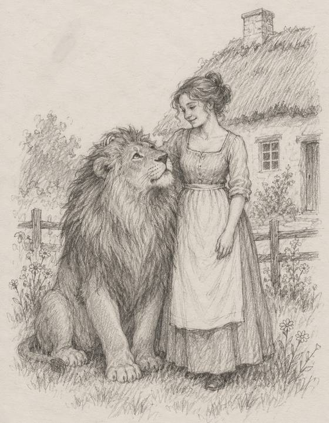

|
Have you ever made yourself a little smaller for a man?
Laughed a bit quieter. Saw your friends a bit less. Kept your opinion to yourself at his mother’s table.
A lot of us have. We call it “being easy to love.”
A Greek historian called this story “time-worn” over 2,000 years ago. It’s one of Aesop’s fables.
A lion fell in love with a farmer’s daughter. He asked her father if he could marry her.
The father was scared stiff. He didn’t want a lion in the family. But he didn’t dare tell a lion no.
So he made a plan. In one telling from 1894, he asks ever so politely:
“Might I venture to suggest that your Majesty should have your claws removed, and your teeth extracted…”
Talk about tough in-laws.
And the lion was so in love, he said yes.
He had his claws cut and his teeth pulled. Then he went back to ask again.
Now the father wasn’t scared of him anymore.
He drove the lion away, into the forest.
Moral of the story: don’t give away your strength just because someone asks nicely.

The lion wasn’t a fool. He was in love. Love makes us all say yes.
We give up smaller things than claws. A big laugh. A Saturday with the girls. A hobby he never quite got.
No one right now? Some of us file ourselves down ahead of time, just in case.
For love, I’d put it this way: don’t give up what makes you you, just to be chosen.
Look at what his deal got him.
Then: the King of Beasts, with claws and teeth. Now: no claws, no teeth.
Then: a father too scared to tell him no. Now: a father who isn’t scared at all.
Then: he came to ask for a wedding. Now: the forest, and no wedding either.
He stopped being a lion so he’d be chosen. And he still wasn’t.
This last part is only for some of you.
If you’ve always been all of you, stop here. Keep roaring.
But if you’ve gone quiet just to keep the peace…
If there’s something you loved that you haven’t done in years…
Or if there’s no one right now, and you’ve been trimming yourself to fit whoever comes next…
Tell me what you gave up, and who it was for. Or what you’ve been trimming, and why.
Evelyn, I’d like to stop making myself smaller →
If any of that hit home, go easy on yourself.
You did it out of love. Or to keep the peace. Or because someone, long ago, called you “too much.”
None of that is weakness.
It’s just hard to feel loved when only half of you is in the room.
Haven’t chatted with me yet? Newcomers get the first 3 minutes free.
The lion gave his claws up in one go. We usually give ours up a little at a time. That’s why it’s worth a look today.
Bring all of me to Evelyn →
— Evelyn
P.S. I left the end of the father’s sentence out. In that 1894 telling, he finishes: “then we would gladly consider your proposal again.” Consider. Not a wedding. Not even a yes. If you’ve been giving up pieces of yourself for a maybe, come and tell me about it. Start here.
|